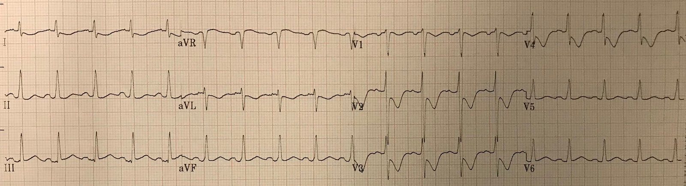
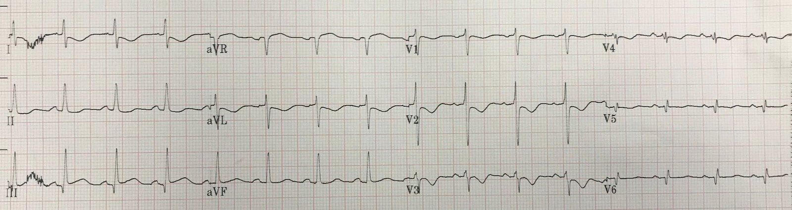
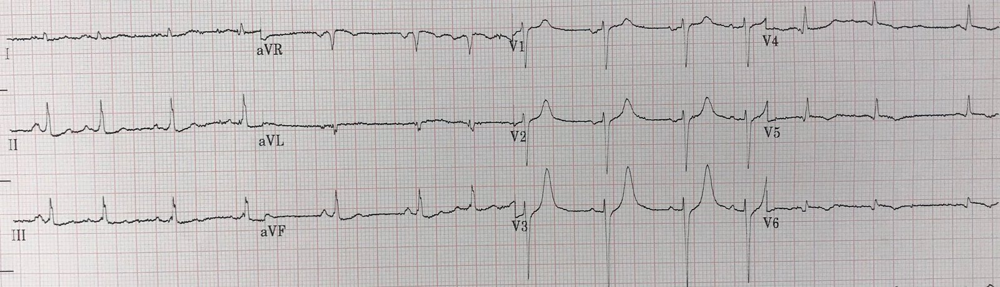
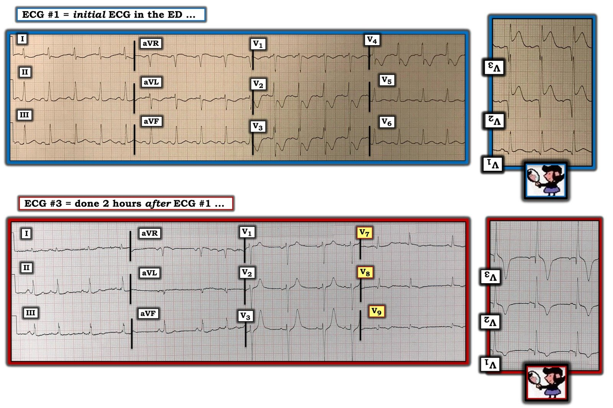

21/09/2020 — Bác sĩ can thiệp ở bệnh viện tiếp nhận: “Không STEMI thì không thông tim. Tôi không nhận chuyển viện.”
Bản dịch tiếng Việt của bài "Interventionalist at the Receiving Hospital: “No STEMI, no cath. I do not accept the transfer.”" – Dr. Smith’s ECG Blog. Giữ nguyên toàn bộ 6 hình ảnh của bản gốc.
Có thật là một số bác sĩ tim mạch bị giới hạn bởi việc tuân thủ cứng nhắc tiêu chuẩn STEMI dựa trên milimét? Đúng vậy. Dù chúng ta không biết là bao nhiêu người.
Tôi nhận được các điện tâm đồ này qua tin nhắn từ một bác sĩ vừa tốt nghiệp nội trú, sau khi tất cả đã được ghi xong, kèm theo thông tin lâm sàng sau:
Một người đàn ông 50 mấy tuổi không có tiền sử bệnh tim, nhưng có tiền sử đái tháo đường, đang lao động chân tay thì đột ngột gục xuống. Người ta thấy bệnh nhân đang rung thất và đã khử rung, rồi đưa đến một khoa cấp cứu (ED) địa phương không có phòng thông tim (cath lab).
Đây là điện tâm đồ đầu tiên tại khoa cấp cứu:


Đây khá rõ ràng là một OMI thành dưới-sau, đúng không?
Có ST chênh lên nhẹ ở thành dưới, với ST chênh xuống soi gương (reciprocal) ở I & aVL, và sóng T đảo ngược.
Có ST chênh xuống sâu ở V2-V4, cũng kèm sóng T đảo ngược.
Có ST chênh lên nhẹ ở V5 và V6.
Hình ảnh này có giá trị chẩn đoán một OMI dưới-sau-bên (infero-postero-lateral)
Một số người cho rằng nhồi máu cơ tim thành sau luôn có sóng T dương (cùng với ST chênh xuống) ở V2-V4; ĐIỀU NÀY LÀ SAI. Sóng T có thể đảo ngược, dương hoặc hai pha trong giai đoạn cấp.
Điện tâm đồ chuyển đạo bên phải này được ghi khoảng 30 phút sau bản đầu tiên:


V1R ở đây = V2
V2R = V1
V3R nằm xa hơn về bên phải, v.v.
Không có ST chênh lên (STE) ở các chuyển đạo bên phải
V1 và V2 có ST chênh xuống ít hơn đáng kể. Có thể đã có một phần tái tưới máu tự phát.
Không có STE ở các chuyển đạo bên phải — không có OMI thất phải
Điện tâm đồ này, trong đó V4-V6 được đặt ở thành ngực sau (V7, V8, V9), được ghi 2 giờ sau đó:


Trước hết, hãy để ý rằng ST chênh xuống ở V2 và V3 giờ đã gần như mất hết.
Vì vậy bạn sẽ không thể mong đợi có ST chênh lên ở V7-V9!!
Để một điện tâm đồ chuyển đạo phía sau làm sáng tỏ điện tâm đồ chuẩn, hai bản phải được ghi cùng lúc.
Hãy để ý:
1) các chuyển đạo thành dưới không còn cho thấy OMI; đã có tái tưới máu
2) V2 và V3 chỉ còn ST chênh xuống rất ít, càng ủng hộ tái tưới máu
3) Sóng T ở V2, V3 giờ đã dương và lớn. Đây là điều được dự đoán khi có tái tưới máu thành sau. Xem phần bàn luận bên dưới về “sóng T tái tưới máu thành sau”
4) V7-V9 có sóng T đảo ngược, điều này càng ủng hộ tái tưới máu thành sau.
Ca bệnh tiếp diễn
Bác sĩ cấp cứu lo ngại OMI. Anh gọi cho bác sĩ can thiệp ở cơ sở tiếp nhận. Đây là câu trả lời anh nhận được:
Bác sĩ can thiệp: “Không STEMI thì không thông tim. Tôi không nhận chuyển viện.”
Sau khi ổn định bệnh nhân và ghi thêm các điện tâm đồ, anh thử lại một lần nữa:
Bác sĩ can thiệp: “Đây không phải STEMI.”
Bác sĩ cấp cứu: “Tôi biết. Đây là tương đương STEMI. Bệnh nhân đã bị tắc và giờ đã tái tưới máu.”
Bác sĩ can thiệp: “Chúng tôi không thông tim những bệnh nhân này. Và ngày mai chúng tôi cũng sẽ không làm.”
Troponin I tăng lên 33 ng/mL, là mức điển hình của STEMI/OMI. Bệnh nhân được điều trị nội khoa theo hội chứng vành cấp (ACS) và không được chụp mạch vành trong vòng 72 giờ. Sau đó bệnh nhân không tỉnh lại sau 72 giờ, nên được chuyển sang chăm sóc giảm nhẹ (comfort care). Nhưng cho tới thời điểm đó, không ai có thể biết kết cục thần kinh của bệnh nhân, và lý do được nêu ra để không nhận bệnh nhân không phải là lo ngại về kết cục thần kinh mà là vì điện tâm đồ không đạt tiêu chuẩn STEMI.
Bình luận
Pendell và tôi vừa thực hiện một nghiên cứu về điện tâm đồ trong OMI, và đã gửi bản thảo cho JACC. Tôi đã đọc hơn 4000 điện tâm đồ của 808 bệnh nhân, nhiều người có OMI, nhiều người có nhồi máu không do tắc (Non-OMI), và nhiều người đã được loại trừ nhồi máu cơ tim (MIRO).
Tôi đọc các điện tâm đồ liên tiếp và, với mỗi lần đọc, sẽ quyết định “OMI” hoặc “Không phải OMI” (cả NOMI và MIRO đều là “Không phải OMI”). Nhiều bệnh nhân có các điện tâm đồ liên tiếp; với mỗi bệnh nhân, sau khi đọc và diễn giải điện tâm đồ-1, rồi chuyển sang điện tâm đồ-2, và -3, và -4, v.v., tôi không thể quay lại thay đổi kết quả đọc của từng điện tâm đồ trước đó. Tôi cũng đo các đoạn ST và xác định xem đó có phải STEMI theo tiêu chuẩn milimét hay không (như được nêu trong Định nghĩa toàn cầu lần thứ 4 về nhồi máu cơ tim), hay là OMI không có STEMI. Tiêu chí đánh giá kết cục là bệnh nhân cuối cùng có OMI hay không. Chi tiết về phương pháp và kết quả dĩ nhiên là phức tạp, và các bạn sẽ thấy khi bài báo được công bố, nhưng chỉ cần nói rằng tiêu chuẩn STEMI có độ nhạy khoảng 40% đối với OMI còn cách diễn giải của tôi có độ nhạy khoảng 90% (và độ đặc hiệu tương đương), và tôi diễn giải được OMI sớm hơn trung bình 3 giờ so với điện tâm đồ mà các bác sĩ điều trị xác định là dương tính. Pendell đọc khoảng một phần ba số điện tâm đồ, và kết quả của anh ấy cũng tương tự.
Các chuyên gia phản biện tim mạch nói rằng “Không ai tuân thủ cứng nhắc tiêu chuẩn STEMI. Định nghĩa toàn cầu lần thứ 4 có đề cập đến ST chênh xuống, nhồi máu cơ tim thành sau, và thay đổi sóng T.” Và bài báo đã bị từ chối.
Theo hiểu biết của tôi, chưa có y văn nào về cách các bác sĩ tim mạch và bác sĩ tim mạch can thiệp diễn giải các hướng dẫn về nhồi máu cơ tim cấp trong Định nghĩa toàn cầu lần thứ 4 về nhồi máu cơ tim. Nhưng theo kinh nghiệm giai thoại, nhiều người tuân thủ cứng nhắc tiêu chuẩn STEMI dựa trên milimét. Blog này đầy những ca OMI không đạt tiêu chuẩn STEMI dựa trên milimét đã bị gạt đi.
Sóng T tái tưới máu thành sau (Posterior Reperfusion T-waves)
Tại sao sóng T ở V2 và V3 trở nên lớn khi tái tưới máu? Trả lời: Do các vectơ. 1) Thành trước có vectơ sóng T dương (hướng ra trước). 2) Thành sau giờ có vectơ sóng T âm (hướng ra sau), điều này tương đương với việc có một vectơ dương hướng về các chuyển đạo phía trước. Vì vậy cả hai vectơ cộng lại và tạo ra sóng T dương lớn bất thường ở V2 và V3!
Tôi đã phát hiện ra hiện tượng này nhiều năm trước và gọi nó là “sóng T tái tưới máu thành sau”. Chúng tôi đã nghiên cứu và viết bài báo này: Driver BE. Shroff GR. Smith SW. Posterior reperfusion T-waves: Wellens’ syndrome of the posterior wall (Sóng T tái tưới máu thành sau: hội chứng Wellens của thành sau).
Dưới đây là một vài ví dụ về sóng T tái tưới máu thành sau:
A middle aged man with ST depression and a narrow window of opportunity (Một người đàn ông trung niên có ST chênh xuống và cơ hội can thiệp hẹp)
Anterior ST elevation: Anterior STEMI? A mysterious case. (ST chênh lên thành trước: STEMI thành trước? Một ca bí ẩn.)
Series of Prehospital ECGs Showing Reperfusion (Loạt điện tâm đồ trước viện cho thấy tái tưới máu)

===================================
BÌNH LUẬN CỦA TÔI, bởi KEN GRAUER, MD (21/9/2020):
===================================
Tôi mong rằng những bác sĩ tim mạch vẫn tiếp tục tuân thủ cứng nhắc tiêu chuẩn STEMI dựa trên milimét sẽ bắt đầu đọc Dr. Smith’s ECG Blog. NẾU họ không làm vậy — họ sẽ tiếp tục bỏ sót những OMI hiển nhiên mà lẽ ra cần được thông tim kịp thời để được chăm sóc tối ưu.
- Thành sau của thất trái không được nhìn trực tiếp bởi bất kỳ chuyển đạo nào trong 12 chuyển đạo của điện tâm đồ chuẩn. Các chuyển đạo phía sau (tức là các chuyển đạo V7, V8, V9) — đã được đề xuất như một cách để tăng khả năng quan sát thành sau trên điện tâm đồ. Khi có nhồi máu cơ tim thành sau cấp — các chuyển đạo phía sau này đôi khi sẽ biểu hiện ST chênh lên mà không thấy trên 12 chuyển đạo chuẩn.
- CẢNH BÁO: Mức độ ST chênh lên mà bạn có khả năng thấy được ở các chuyển đạo phía sau trong nhồi máu cơ tim thành sau cấp là hạn chế. Do đó, giá trị chẩn đoán của các chuyển đạo phía sau (theo kinh nghiệm của tôi) là hạn chế.
Đề xuất GIẢI PHÁP: Thay vì mất thêm thời gian để ghi một điện tâm đồ khác với các chuyển đạo phía sau (mà cùng lắm — chỉ cung cấp thông tin hạn chế) — HÃY THÀNH THẠO việc sử dụng nghiệm pháp soi gương (Mirror Test) như một công cụ hỗ trợ nhận diện nhồi máu cơ tim thành sau cấp.
- Nghiệm pháp soi gương là một công cụ hỗ trợ trực quan đơn giản: Nó giúp bác sĩ lâm sàng nhận diện nhồi máu thành sau cấp. Nó dựa trên tiền đề rằng các chuyển đạo phía trước cung cấp một hình soi gương của hoạt động điện ở thành sau. Chỉ cần lật ngược một điện tâm đồ 12 chuyển đạo chuẩn, rồi giơ lên soi dưới ánh sáng — bạn có thể dễ dàng hình dung “hình soi gương” của các chuyển đạo V1, V2, V3.
- Trước đây tôi đã bàn luận về ứng dụng lâm sàng của nghiệm pháp soi gương trong nhiều dịp (XEM Bình luận của tôi ở cuối trang trong cả bài ngày 13 tháng Chín năm 2020 lẫn bài ngày 16 tháng Hai năm 2019 trên Dr. Smith’s ECG Blog).
- Như chúng ta sẽ thấy ngay sau đây — Việc sử dụng nghiệm pháp soi gương khiến người ta khó hiểu LÀM SAO một bác sĩ tim mạch có thể nhìn vào điện tâm đồ đầu tiên trong ca này mà lại không nhận ra OMI cấp.
CA BỆNH HÔM NAY: Bệnh nhân trong ca hôm nay là một người đàn ông 50 mấy tuổi đột ngột gục xuống — và được phát hiện đang rung thất (VFib). Bệnh nhân đã được khử rung, rồi được đưa đến khoa cấp cứu gần nhất, nơi ghi được điện tâm đồ #1 (Hình 1).
- Như Dr. Smith đã nêu — có những dấu hiệu hiển nhiên trên điện tâm đồ đầu tiên này có giá trị chẩn đoán OMI cấp.


Hình 1: Điện tâm đồ đầu tiên tại khoa cấp cứu — cùng với bản ghi thứ 3 đã trình bày ở trên, trong đó các chuyển đạo V4, V5 và V6 được thay bằng các chuyển đạo phía sau V7, V8 và V9. Hình soi gương của các chuyển đạo V1, V2 và V3 được trình bày ở bên phải mỗi bản ghi (Xem phần bài viết).
SUY NGHĨ CỦA TÔI về điện tâm đồ #1: Nhịp là nhịp nhanh xoang với tần số 105-110/phút. Khoảng PR và QRS bình thường. QTc có vẻ hơi kéo dài — mặc dù điều này khó đánh giá do tần số tim tăng. Trục mặt phẳng trán bình thường ở +70 độ. Không có lớn buồng tim. Về Thay đổi Q–R–S–T của điện tâm đồ #1:
- Có một sóng Q nhỏ và hẹp đơn độc ở chuyển đạo III. Ý nghĩa của sóng này không chắc chắn.
- Tăng tiến sóng R cho thấy vùng chuyển tiếp bình thường, xảy ra giữa chuyển đạo V3 và V4. Cần lưu ý (và có ý nghĩa) — sóng R trở nên khá cao (~7 mm) ngay từ chuyển đạo V2 (Bàn thêm về điều này trong phần thảo luận của tôi bên dưới).
Về Thay đổi ST-sóng T:
- Dấu hiệu nổi bật nhất trên điện tâm đồ #1 là ST-T chênh xuống rất rõ. Hiện tượng này bắt đầu ở chuyển đạo V1 — và trở nên rõ rệt ở các chuyển đạo V2, V3 và V4.
- Các thay đổi ST-T khác trên bản ghi này khiêm tốn hơn. Có ST chênh lên nhẹ ở chuyển đạo III — ST-T chênh xuống soi gương ở các chuyển đạo I và aVL — và ST chênh lên nhẹ ở chuyển đạo V6.
Sử dụng nghiệm pháp soi gương cho điện tâm đồ #1:
- Để giúp nhận ra ý nghĩa lâm sàng của ST-T chênh xuống ở các chuyển đạo V1 đến V3 của điện tâm đồ #1 — tôi đã đặt hình–soi gương của các chuyển đạo này ở bên phải điện tâm đồ #1 (Hình 1). Hãy nhớ rằng hình soi gương của các chuyển đạo phía trước này cho chúng ta hình ảnh về hoạt động điện xảy ra ở thành sau của thất trái.
- CHẲNG PHẢI hình soi gương của các chuyển đạo phía trước này trên điện tâm đồ #1 gần như đang gào lên rằng “Tôi đang bị một OMI thành sau cấp” (tức là sóng Q lớn kèm đoạn ST tối cấp và chênh lên rõ rệt) sao?
- Mặc dù tôi không làm hình soi gương của chuyển đạo V4 từ điện tâm đồ #1 — nhưng rõ ràng là chuyển đạo V4 khi bị lật ngược sẽ trông gần như giống hệt các chuyển đạo V2 và V3 được lật ngược trong hình soi gương.
- Quay lại nhận xét của tôi ở trên về tăng tiến sóng R trên điện tâm đồ #1: — Sự xuất hiện nhanh chóng của một sóng R cao đến bất ngờ ngay từ chuyển đạo V2 “trở thành” một sóng Q trong hình soi gương.
- ĐIỂM CẦN HỌC: ST chênh xuống tối đa ở các chuyển đạo V2 đến V4 (đặc biệt khi ST-T có hình dạng như trên điện tâm đồ #1) ở một bệnh nhân có đau ngực mới xuất hiện (hoặc ngừng tim đột ngột, như trong ca hôm nay) — có giá trị chẩn đoán OMI thành sau cấp cho đến khi chứng minh được điều ngược lại!
Tiếp tục với ca bệnh HÔM NAY: Bản ghi thứ 1 trong ca này có khảo sát các chuyển đạo phía sau là điện tâm đồ #3, được ghi 2 giờ sau điện tâm đồ #1. Như Dr. Smith đã nêu: Để các chuyển đạo phía sau làm sáng tỏ việc diễn giải điện tâm đồ đầu tiên — “chúng phải được ghi cùng lúc”. Dù vậy — vẫn có thể rút ra một số điểm quan trọng về điện tâm đồ #3:
- Hãy để ý biên độ của các phức bộ QRS và ST-T ở các chuyển đạo V8 và V9 trên điện tâm đồ #3 nhỏ như thế nào. Mặc dù bản ghi này được ghi 2 giờ sau điện tâm đồ #1 — dường như gần như chắc chắn rằng biên độ của các thay đổi ST-T ở các chuyển đạo phía sau này sẽ không lớn được như biên độ của các thay đổi ST-T mà chúng ta thấy trong hình soi gương của các chuyển đạo V1, V2, V3 trên điện tâm đồ #1. Không cần đến các chuyển đạo phía sau để chẩn đoán OMI thành sau cấp trên điện tâm đồ #1.
- Dr. Smith nhấn mạnh rằng sóng T cao, dương ở các chuyển đạo V2, và đặc biệt ở chuyển đạo V3 của điện tâm đồ #3 phản ánh các thay đổi tái tưới máu. CHẲNG PHẢI các thay đổi tái tưới máu này trên điện tâm đồ #3 DỄ hình dung (và khái niệm hóa) hơn nhiều từ hình soi–gương của các chuyển đạo V1, V2 và V3 ở bên phải điện tâm đồ #3 sao?
- Dr. Smith cũng nhấn mạnh rằng sóng T đảo ngược ở các chuyển đạo V8 và V9 của điện tâm đồ #3 là thêm một dấu hiệu của tái tưới máu cấp. So sánh độ sâu của sóng T đảo ngược ở các chuyển đạo V8 và V9 trên điện tâm đồ #3 — với độ sâu của sóng T đảo ngược trong hình soi–gương của các chuyển đạo V1, V2, V3 của điện tâm đồ #3 — CHẲNG PHẢI những thay đổi điện tâm đồ của tái tưới máu cấp này DỄ hình dung (và khái niệm hóa) hơn nhiều từ hình soi–gương sao? Các thay đổi ST-T thấy ở các chuyển đạo phía sau nhìn chung có biên độ nhỏ hơn nhiều so với các thay đổi ST-T thấy trong hình soi gương của các chuyển đạo V1, V2 và V3.
ĐIỀU CỐT LÕI từ ca hôm nay: Thật khó biện minh cho quyết định của khoa tim mạch không thông tim cho bệnh nhân trong ca hôm nay chỉ vì điện tâm đồ “không cho thấy STEMI”.